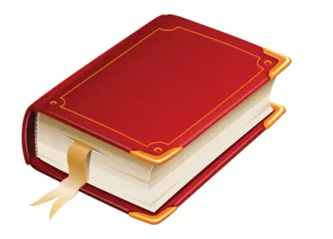
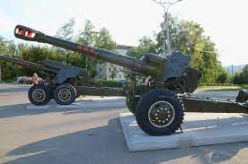
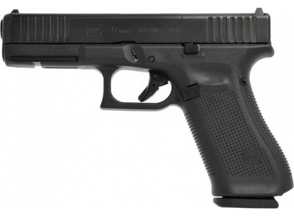

Вогнепа́льна збро́я — зброя, в якій для викидання снаряду (міни, кулі) з каналу ствола використовується сила тиску газів, що утворюються при згорянні метальної вибухової речовини (пороху) або спеціальних горючих сумішей. Поєднує в собі засоби безпосереднього ураження (снаряд, міна, куля) і засоби метання їх до цілі (гармата, міномет, кулемет, гвинтівка, пістолет тощо). Сучасна вогнепальна зброя підрозділяється на артилерійську та стрілецьку зброю і гранатомети.
Артилерійська вогнепальна зброя призначається для ураження різноманітних цілей, що знаходяться на значній відстані, і перебуває на озброєнні сухопутних військ, авіації і флоту. До неї відносяться: наземні нарізні, у тому числі самохідні і саморушні артилерійські системи різних типів (гармати, гаубиці, гармати-гаубиці, гаубиці-гармати, мортири); нарізні та гладкоствольні безвідкатні гармати; нарізні та гладкоствольні міномети; зенітні гармати, у тому числі автоматичні; авіаційні автоматичні гармати; нарізні та гладкоствольні танкові гармати; артилерія морська. До артилерійської вогнепальної зброї також відносять реактивні системи залпового вогню.
Пістолет Докладніше: Пістолет Пістолет Макарова Форт-12 Пістолет (фр. pistolet, від чеськ. píšťala — пищаль, дудка) — вид ручної вогнепальної зброї для стрільби однією рукою. Пістолет походить від рушниці і є полегшеним її варіантом, що характеризується коротшим стволом і ложем, котре мало своєрідне завершення у вигляді нахиленого до низу руків'я. Для зручності утримування та витягання з кобури руків'я закінчувалось утовщенням «яблуком». Поширені за козацької доби були як коліщаті, так і кремнієві (пізніше) замки, за допомогою котрих здійснювалось запалення пороху, що і призводило до пострілу. Пістолет як повноцінний різновид ручної вогнепальної зброї розвинувся в Західній Європі, звідки і походила значна частина стволів, котрими користувались козаки. Поряд із цим значного поширення набули пістолети східного походження (Турецького, кримського, кавказького тощо). Розвивалось зброярство і в Україні. Окрім бойового призначення пістолети носили характер військово-парадної зброї, задля чого багато прикрашались. Особливої уваги прикрашенню зброї надавали східні майстри. Вони використовували гравірування, черніння, насікання та інкрустацію золотом і сріблом та коштовними каміннями. Прикрашали як руків'я, так і люфи (в окремих випадках всю зовнішню поверхню, включаючи і замок). Особливо багато оздоблені пістолети вироблені Кубачинськими майстрами з Дагестану. Такими пістолетами часто користувались кубанські старшини і козаки протягом майже цілого 19 ст. Щодо стрілецької амуніції запорожців, то вони як правило, носили за поясом по 2 пістолети і ще 2 — у «кобурах» при сідлі. Така кількість пістолетів свідчила про високий рівень вогневої сили як окремого козака, так і цілого козацького війська. Сам постріл з пістолета виконували переважно з однієї руки в різноманітних положеннях, включаючи і верхову їзду.
Рушниця Докладніше: Рушниця Козак з рушницею Рушниця — вогнепальна ручна стрілецька зброя з довгим стволом. Рушниця характеризується наявністю основних складових: металевий ствол без нарізу (з нарізом — гвинтівка); ложе з прикладом; замок; шомпол (як правило). Походження назви — на відміну від мушкета рушниця дозволяла вести вогонь без підставок з рук, тому спочатку почала називатись «ручниця» що з часом трансформувалось в «рушниця». Стволи рушниці мають різноманітну довжину, але найчастіше у межах 1 метра (± 10-20 см). У розрізі стволи бувають круглі, або 8-гранні. У казенній частині ствол, переважно, ширший ніж біля дульного зрізу. Ряд стволів мають біля дульного зрізу невеличке розширення, а окремі — розтруб для стрільби картеччю. Вага ствола коливається у межах 1,5 кг (± 500 гр.), але є і винятки, зумовлені розмірами. Калібр коливається від 12 до 20 мм. Для точнішої стрільби з часом застосовують нарізи на внутрішній поверхні ствола рушниці («Гвинтівки»). Ложе виготовляли часто з горіха (відомі й інші породи дерева), але могли доповнюватись кістяними вставками (рушниці кримського і кавказького виробництва мали на кінці дерев'яного приклада кістяну «п'яту»). Замок міг бути ґнотовим або кремнієвим. Шомпол виготовляли зі сталі і поміщали у спеціальному отворі в ложі під стволом. Рушниці, як правило, мають різноманітні прикраси у вигляді металевих інкрустаційних пластин, різьблення по дереву і кості, насікання, чорніння та гравірування на металевих частинах рушниці (ствол, замок, обіймиці). В козацькому війську використовували рушниці різноманітного походження: турецькі, кримські, кавказькі, німецькі, польські,місцевого виробництва і т. і.
| Gloc-18 | PzH 2000 | Spas-12 | Зброя |
| 1986 | 2024/2 | 1814 | Рік видатнитства |
| 9*19 | 155*55 | 12*70 | Розмір патрону у мм |